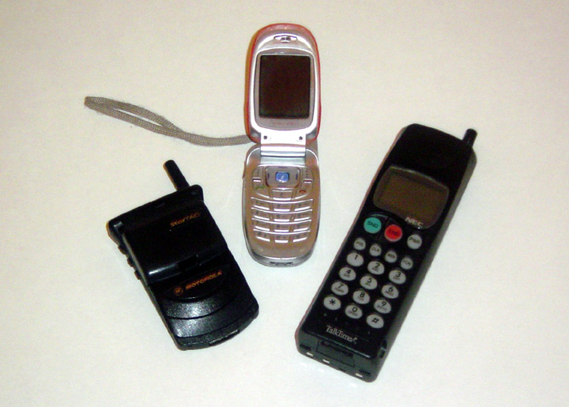
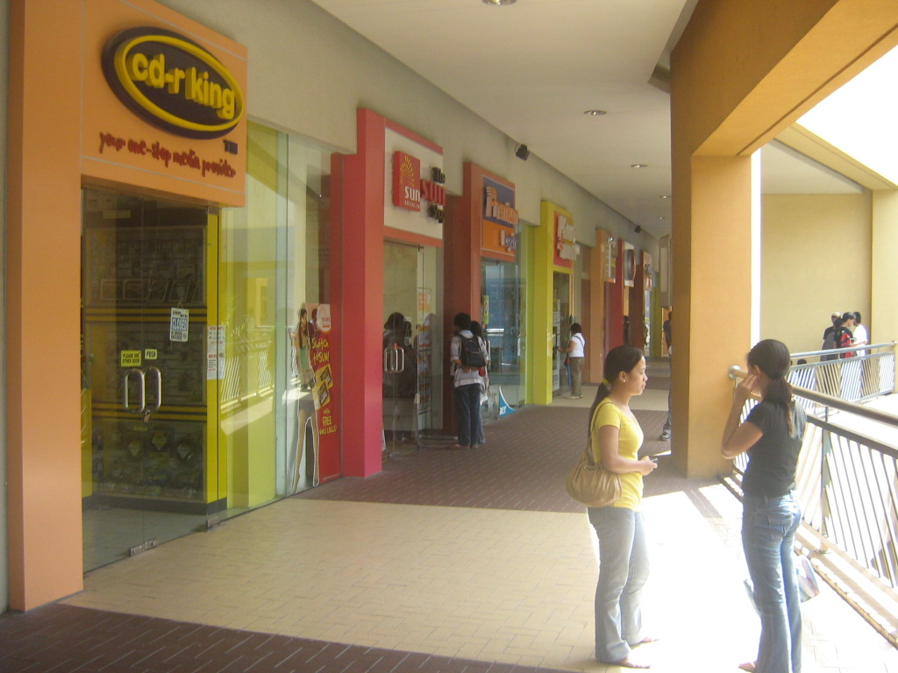

A PHILIPPINE POP CULTURE MUSEUM · 2000–2010
TEXTS, TV &
TAMBAYAN.
Fourteen exhibits, eighteen games, one decade. Pick a wing on the phone and step back in.
ADMIT ONE03 WINGS · 14 EXHIBITS · 18 GAMESPH · 2000–2010


14exhibits
13games
14stamps
03guided routes